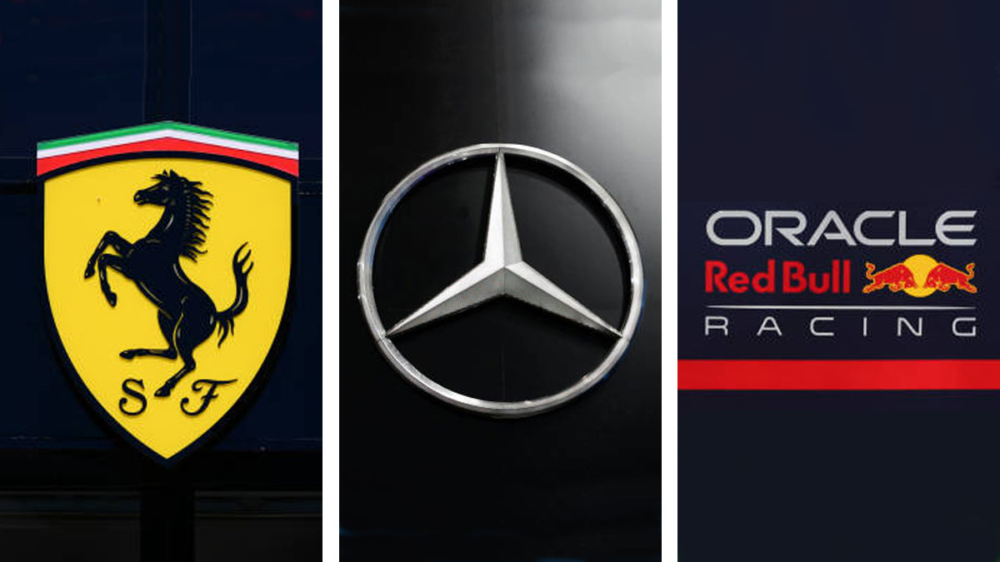

11 de Julio del 2020
Los patrones de diseño son soluciones habituales a problemas que ocurren con frecuencia en el diseño de software.
Citado no en bloque "Los patrones de diseño son soluciones habituales a problemas que ocurren con frecuencia en el diseño de software."
HTML Pagina web
Formatos de textos:
Este es un texto en negrita.
Este es un texto prioritario.
Este es un Texto en cursiva.
Esto es Texto enfático.
texto pequeño.
Este es un texto eliminado.
Este es un texto insertado.
Texto principalTexto sub indice
Texto super indicesuper indice
Fecha .
Texto de valores: 1500.
Texto con estilo: texto con estilo azul
Uso del map Area
Resumen de los patrones de diseño utilizados para programar (summary)
Uso de canvas:
Uso de svg para graficos vectoriales
Uso del iframe para el video de yt